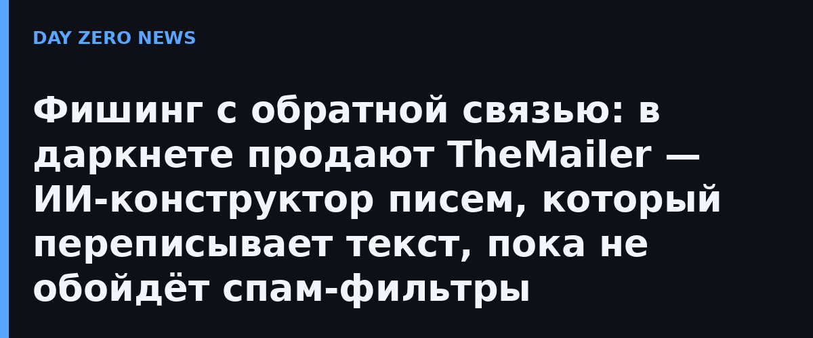

Команда Varonis Threat Labs опубликовала разбор TheMailer — саморазмещаемой фишинговой платформы, которую продвигают на подземных форумах. Любопытная деталь: собственного ИИ у конструктора нет. Он подключается к Claude, ChatGPT, Grok, Gemini, Mistral и DeepSeek через API-ключи самого заказчика — то есть сервисы легальных провайдеров работают на атакующего напрямую, а билаты за генерацию спама идут с его аккаунтов.
TheMailer готовит отдельные версии письма под каждого почтового провайдера — Gmail, Microsoft, GMX, Yandex — и учитывает их правила фильтрации и лимиты отправки. Ключевая функция «Inbox Loop» работает как классический агентский цикл: тестовое письмо уходит на реальный ящик, и если оно попадает в спам, модель переписывает текст и пробует снова — до тех пор, пока письмо не доедет до входящих. Отдельная опция «убрать следы ИИ» маскирует типичные машинные обороты фраз. Поверх этого — персонализация: PDF-«счета», приглашения в календарь и SVG-вложения с именем получателя, копирующие настоящую деловую переписку (вплоть до требования «говорить тоном профессионального банка»).
По данным Varonis, реклама TheMailer крутится на подземных форумах с марта 2026 года и собрала более 24 тысяч просмотров; на скриншотах продавца видна кампания в 24 829 писем. Buyout-лицензия оценивается в 3 000–6 000 долларов, оплата криптовалютой, установка — с помощью поддержки продавца. Схожие детали независимо описали Dark Reading и Aviatrix Network — по их оценке, кампании с участием конструктора доходят до сотен тысяч писем-приманок.
Спам-фильтры учились ловить «текст с признаками», но здесь текст эволюционирует по обратной связи от реальной доставки — это тот самый агентский цикл «действие → оценка → улучшение», просто применённый к преступному конвейеру. Практический вывод для компаний: SPF/DKIM и проверка «похожести» текста против таких писем слабеют, поэтому упор смещается на поведенческий анализ (аномальные вложения вроде SVG, нетипичные приглашения в календарь), обязательную MFA и ограничения на использование внешних API-ключей в корпоративных аккаунтах — ведь оплаченный легальный ИИ оставить без внимания криминалу сложнее, чем собственный генератор.